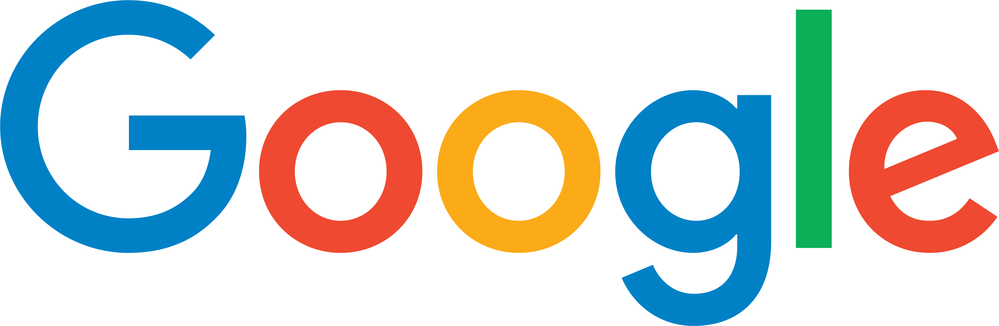

The "Sign Language Recognition, Translation & Production" (SLRTP) Workshop brings together researchers working on different aspects of vision-based sign language research (including body posture, hands and face) and sign language linguists. The aims are to increase the linguistic understanding of sign languages within the computer vision community, and also to identify the strengths and limitations of current work and the problems that need solving. Finally, we hope that the workshop will cultivate future collaborations.
Recent developments in image captioning, visual question answering and visual dialogue have stimulated significant interest in approaches that fuse visual and linguistic modelling. As spatio-temporal linguistic constructs, sign languages represent a unique challenge where vision and language meet. Computer vision researchers have been studying sign languages in isolated recognition scenarios for the last three decades. However, now that large scale continuous corpora are beginning to become available, research has moved towards continuous sign language recognition. More recently, the new frontier has become sign language translation and production where new developments in generative models are enabling translation between spoken/written language and continuous sign language videos, and vice versa. In this workshop, we propose to bring together researchers to discuss the open challenges that lie at the intersection of sign language and computer vision.
We are seeking submissions! If you would like the chance to present your work, please submit a paper to CMT at https://cmt3.research.microsoft.com/SLRTP2020/ by the end of July 6 (Anywhere on Earth). We are happy to receive submissions for both new work as well as work which has been accepted to other venues. In line with the Sign Language Linguistics Society (SLLS) Ethics Statement for Sign Language Research, we encourage submissions from Deaf researchers or from teams which include Deaf individuals, particularly as co-authors but also in other roles (advisor, research assistant, etc).
Suggested topics for contributions include, but are not limited to:
Paper Length and Format:
Submissions should use the ECCV template and preserve anonymity.
All the submissions will be subject to double-blind review process. A paper can be submitted in either long-format (full paper)
or short-format (extended abstract):
Proceedings: Full papers will appear in the Springer ECCV workshop proceedings and on the workshop website. Extended abstracts will appear on the workshop website.
Workshop languages/accessibility: The languages of this workshop are English, British Sign Language (BSL) and American Sign Language (ASL). Interpretation between BSL/English and ASL/English will be provided, as will English subtitles, for all pre-recorded and live Q&A sessions. If you have questions about this, please contact dcal@ucl.ac.uk.
Date: 23 August
Time: 14:00-18:00 GMT+1 (UK Time)
Invited talk by Bencie Woll: Processing Sign Languages: Linguistic, Technological, and Cultural Challenges
Live Session Date and Time : 23 August 14:00-18:00 GMT+1 (BST)
The presentation materials and the live interaction session will be accessible only to delegates registered to ECCV during the conference, the recordings will be made publicly available afterwards.
The morning session (06:00-08:00) is dedicated to playing pre-recorded, translated and captioned presentations. There wil be no live interaction in this time.
To access recordings: Look for the email from ECCV 2020 that you received after registration (if you registered before 19 August this would be “ECCV 2020 Launch").
Follow the instructions in that email to reset your ECCV password and then login to the ECCV site.
Click on "Workshops" and then "Workshops and Tutorial Site",
then choose Sign Language Recognition, Translation and Production (link here if you are already logged in).
There will be a list of all recorded SLRTP presentations – click on each one and then click the Video tab to watch the presentation.
Please watch the pre-recorded presentations of the accepted papers before the live session. We will have their Q&A discussions during the live session. If you have questions for the authors, we encourage you to submit them here in advance, to save time.
As an atendee please use the Q&A functionality to ask your questions to the presenters during the live event. You can also use the Chat to raise technical issues.
During live Q&A session we suggest you to use Side-by-side Mode. You can activate it by clicking on Viewing Options (at the top) and selecting Side-by-side Mode.
Keynotes - Playlist
Full Papers - Playlist
Extended Abstracts - Playlist
Workshop - Recording Transcript No#1 Transcript No#2
We thank our sponsors for their support, making it possible to provide
American Sign Language (ASL) and British Sign Language (BSL) translations for this workshop.
